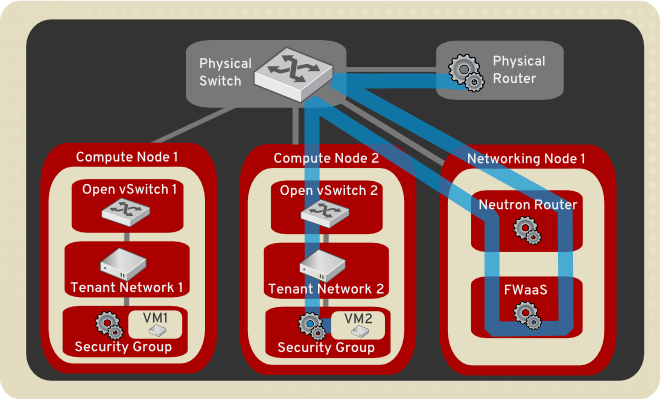

Contents
Introduction to Networking¶
The Networking service, code-named neutron, provides an API that lets you define network connectivity and addressing in the cloud. The Networking service enables operators to leverage different networking technologies to power their cloud networking. The Networking service also provides an API to configure and manage a variety of network services ranging from L3 forwarding and NAT to load balancing, edge firewalls, and IPsec VPN.
For a detailed description of the Networking API abstractions and their attributes, see the OpenStack Networking API v2.0 Reference.
Networking API¶
Networking is a virtual network service that provides a powerful API to define the network connectivity and IP addressing that devices from other services, such as Compute, use.
The Compute API has a virtual server abstraction to describe computing resources. Similarly, the Networking API has virtual network, subnet, and port abstractions to describe networking resources.
| Resource | Description |
|---|---|
| Network | An isolated L2 segment, analogous to VLAN in the physical networking world. |
| Subnet | A block of v4 or v6 IP addresses and associated configuration state. |
| Port | A connection point for attaching a single device, such as the NIC of a virtual server, to a virtual network. Also describes the associated network configuration, such as the MAC and IP addresses to be used on that port. |
Networking resources
To configure rich network topologies, you can create and configure networks and subnets and instruct other OpenStack services like Compute to attach virtual devices to ports on these networks.
In particular, Networking supports each tenant having multiple private networks and enables tenants to choose their own IP addressing scheme, even if those IP addresses overlap with those that other tenants use.
The Networking service:
- Enables advanced cloud networking use cases, such as building multi-tiered web applications and enabling migration of applications to the cloud without changing IP addresses.
- Offers flexibility for the cloud administrator to customize network offerings.
- Enables developers to extend the Networking API. Over time, the extended functionality becomes part of the core Networking API.
Configure SSL support for networking API¶
OpenStack Networking supports SSL for the Networking API server. By default, SSL is disabled but you can enable it in the neutron.conf file.
Set these options to configure SSL:
- use_ssl = True
- Enables SSL on the networking API server.
- ssl_cert_file = PATH_TO_CERTFILE
- Certificate file that is used when you securely start the Networking API server.
- ssl_key_file = PATH_TO_KEYFILE
- Private key file that is used when you securely start the Networking API server.
- ssl_ca_file = PATH_TO_CAFILE
- Optional. CA certificate file that is used when you securely start the Networking API server. This file verifies connecting clients. Set this option when API clients must authenticate to the API server by using SSL certificates that are signed by a trusted CA.
- tcp_keepidle = 600
- The value of TCP_KEEPIDLE, in seconds, for each server socket when starting the API server. Not supported on OS X.
- retry_until_window = 30
- Number of seconds to keep retrying to listen.
- backlog = 4096
- Number of backlog requests with which to configure the socket.
Load-Balancer-as-a-Service (LBaaS) overview¶
Load-Balancer-as-a-Service (LBaaS) enables Networking to distribute incoming requests evenly among designated instances. This distribution ensures that the workload is shared predictably among instances and enables more effective use of system resources. Use one of these load balancing methods to distribute incoming requests:
- Round robin
- Rotates requests evenly between multiple instances.
- Source IP
- Requests from a unique source IP address are consistently directed to the same instance.
- Least connections
- Allocates requests to the instance with the least number of active connections.
| Feature | Description |
|---|---|
| Monitors | LBaaS provides availability monitoring with the ping, TCP, HTTP and HTTPS GET methods. Monitors are implemented to determine whether pool members are available to handle requests. |
| Management | LBaaS is managed using a variety of tool sets. The REST API is available for programmatic administration and scripting. Users perform administrative management of load balancers through either the CLI (neutron) or the OpenStack dashboard. |
| Connection limits | Ingress traffic can be shaped with connection limits. This feature allows workload control, and can also assist with mitigating DoS (Denial of Service) attacks. |
| Session persistence | LBaaS supports session persistence by ensuring incoming requests are routed to the same instance within a pool of multiple instances. LBaaS supports routing decisions based on cookies and source IP address. |
Firewall-as-a-Service (FWaaS) overview¶
The Firewall-as-a-Service (FWaaS) plug-in adds perimeter firewall management to Networking. FWaaS uses iptables to apply firewall policy to all Networking routers within a project. FWaaS supports one firewall policy and logical firewall instance per project.
Whereas security groups operate at the instance-level, FWaaS operates at the perimeter to filter traffic at the neutron router.
Note
FWaaS is currently in technical preview; untested operation is not recommended.
The example diagram illustrates the flow of ingress and egress traffic for the VM2 instance:

To enable FWaaS
FWaaS management options are also available in the OpenStack dashboard.
Enable the FWaaS plug-in in the /etc/neutron/neutron.conf file:
service_plugins = firewall [service_providers] ... service_provider = FIREWALL:Iptables:neutron.agent.linux.iptables_ firewall.OVSHybridIptablesFirewallDriver:default [fwaas] driver = neutron_fwaas.services.firewall.drivers.linux.iptables_ fwaas.IptablesFwaasDriver enabled = True
Note
On Ubuntu, modify the [fwaas] section in the /etc/neutron/fwaas_driver.ini file instead of /etc/neutron/neutron.conf.
Create the required tables in the database:
# neutron-db-manage --service fwaas upgrade headEnable the option in the /usr/share/openstack-dashboard/openstack_dashboard/local/local_settings.py file, which is typically located on the controller node:
OPENSTACK_NEUTRON_NETWORK = { ... 'enable_firewall' = True, ... }Restart the neutron-l3-agent and neutron-server services to apply the settings.
To configure Firewall-as-a-Service
Create the firewall rules and create a policy that contains them. Then, create a firewall that applies the policy.
Create a firewall rule:
$ neutron firewall-rule-create --protocol {tcp|udp|icmp|any} --destination-port PORT_RANGE --action {allow|deny}The Networking client requires a protocol value; if the rule is protocol agnostic, you can use the any value.
Create a firewall policy:
$ neutron firewall-policy-create --firewall-rules "FIREWALL_RULE_IDS_OR_NAMES" myfirewallpolicy
Separate firewall rule IDs or names with spaces. The order in which you specify the rules is important.
You can create a firewall policy without any rules and add rules later, as follows:
- To add multiple rules, use the update operation.
- To add a single rule, use the insert-rule operation.
For more details, see Networking command-line client in the OpenStack Command-Line Interface Reference.
Note
FWaaS always adds a default deny all rule at the lowest precedence of each policy. Consequently, a firewall policy with no rules blocks all traffic by default.
Create a firewall:
$ neutron firewall-create FIREWALL_POLICY_UUID
Note
The firewall remains in PENDING_CREATE state until you create a Networking router and attach an interface to it.
Allowed-address-pairs.
Allowed-address-pairs enables you to specify mac_address/ip_address(cidr) pairs that pass through a port regardless of subnet. This enables the use of protocols such as VRRP, which floats an IP address between two instances to enable fast data plane failover.
Note
Currently, only the ML2, Open vSwitch, and VMware NSX plug-ins support the allowed-address-pairs extension.
Basic allowed-address-pairs operations.
Create a port with a specified allowed address pair:
$ neutron port-create net1 --allowed-address-pairs type=dict list=true mac_address=MAC_ADDRESS,ip_address=IP_CIDR
Update a port by adding allowed address pairs:
$ neutron port-update PORT_UUID --allowed-address-pairs type=dict list=true mac_address=MAC_ADDRESS,ip_address=IP_CIDR
Virtual-Private-Network-as-a-Service (VPNaaS)¶
The VPNaaS extension enables OpenStack tenants to extend private networks across the internet.
This extension introduces these resources:
- service. A parent object that associates VPN with a specific subnet and router.
- The Internet Key Exchange (IKE) policy that identifies the authentication and encryption algorithm to use during phase one and two negotiation of a VPN connection.
- The IP security policy that specifies the authentication and encryption algorithm and encapsulation mode to use for the established VPN connection.
- Details for the site-to-site IPsec connection, including the peer CIDRs, MTU, authentication mode, peer address, DPD settings, and status.
This initial implementation of the VPNaaS extension provides:
- Site-to-site VPN that connects two private networks.
- Multiple VPN connections per tenant.
- IKEv1 policy support with 3des, aes-128, aes-256, or aes-192 encryption.
- IPSec policy support with 3des, aes-128, aes-192, or aes-256 encryption, sha1 authentication, ESP, AH, or AH-ESP transform protocol, and tunnel or transport mode encapsulation.
- Dead Peer Detection (DPD) with hold, clear, restart, disabled, or restart-by-peer actions.

Except where otherwise noted, this document is licensed under Creative Commons Attribution 3.0 License http://creativecommons.org/licenses/by/3.0/legalcode.